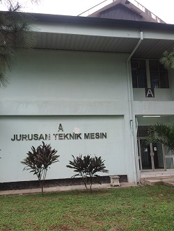
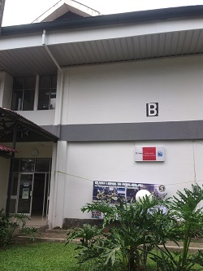
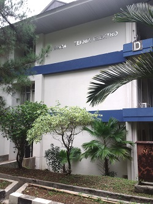
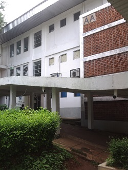
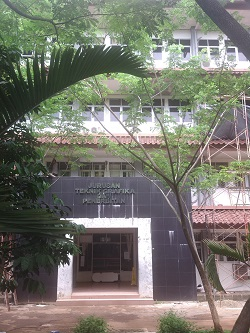
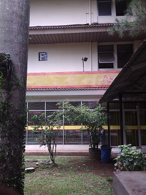
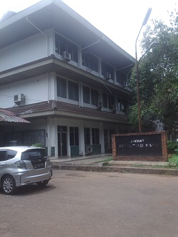

Jurusan Teknik Mesin
|  |
MESIN BERSATU TAK BISA DIKALAHKAN! Diploma III Program Studi Teknik Mesin Program Studi Tekik Konversi Energi Program Studi Alat Berat (Kerjasama dengan PT. Trakindo Utama) Diploma IV / Sarjana Terapan Program Studi Manufaktur Program Studi Pembangkit Tenaga Listrik |
Jurusan Teknik Sipil
|  | |
Jurusan Teknik Elektro
|  |
SATU KOMANDO, SATUKAN ELEKTRO! Diploma III Program Studi Teknik Listrik Program Studi Teknik Elektronika Industri Program Studi Teknik Telekomunikasi Diploma IV / Sarjana Terapan Program Studi Instrumentasi dan Kontrol Industri Program Studi Broadband Multimedia Program Studi Teknik Otomasi Listrik Industri |
Jurusan Teknik Informatika dan Komputer
|  | TIK MELAJU KITA BANGKIT KITA SOLID! Diploma IV / Sarjana Terapan Program Studi Teknik Informatika Program Studi Teknik Komputer dan Jaringan Program Studi Teknik Multimedia dan Jaringan |
Jurusan Teknik Grafika dan Penerbitan
|  | DARI DULU TGP ITU SATU! Diploma III Program Studi Teknik Grafika Program Studi Desain Grafis Program Studi Penerbitan (Jurnalistik) |
Jurusan Akuntansi
|  | AKUNTANSI BERSAMA BERSATU BERJUANG! Diploma III Program Studi Akuntansi Program Studi Keuangan dan Perbankan Diploma IV / Sarjana Terapan Program Studi Akuntansi Terapan Program Studi Keuangan dan Perbankan Terapan Program Studi Keuangan dan Perbankan Syariah Program Studi Manajemen Keuangan |
Jurusan Administrasi Niaga/Bisnis
|  | AN MELAJU SERENTAK BERSATU! Diploma III Program Studi Administrasi Bisnis Diploma IV / Sarjana Terapan Program Studi MICE (Meetings, Incentives, Conventions, Events) Program Studi Administrasi Bisnis Terapan |